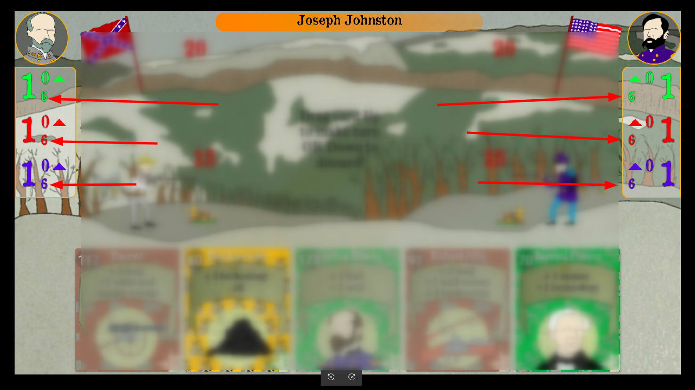
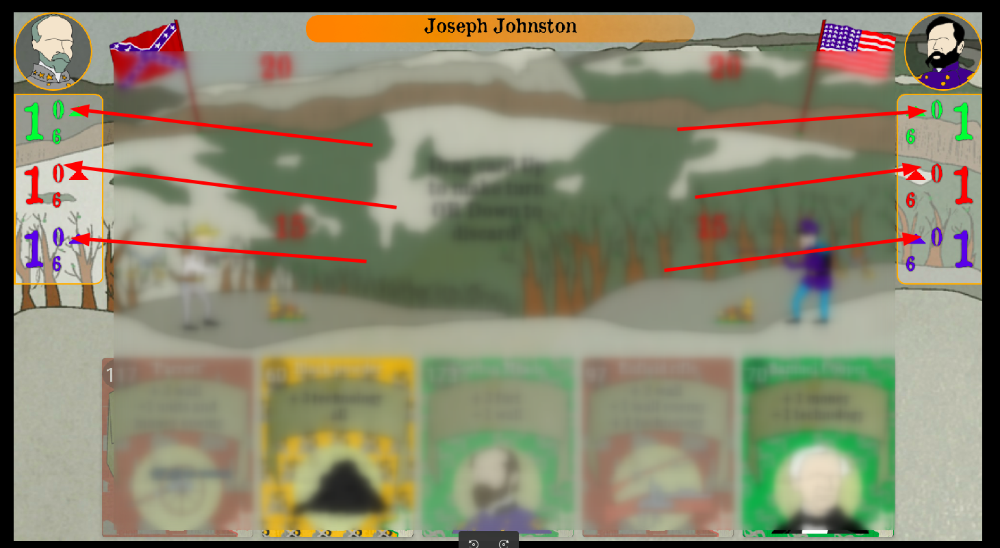
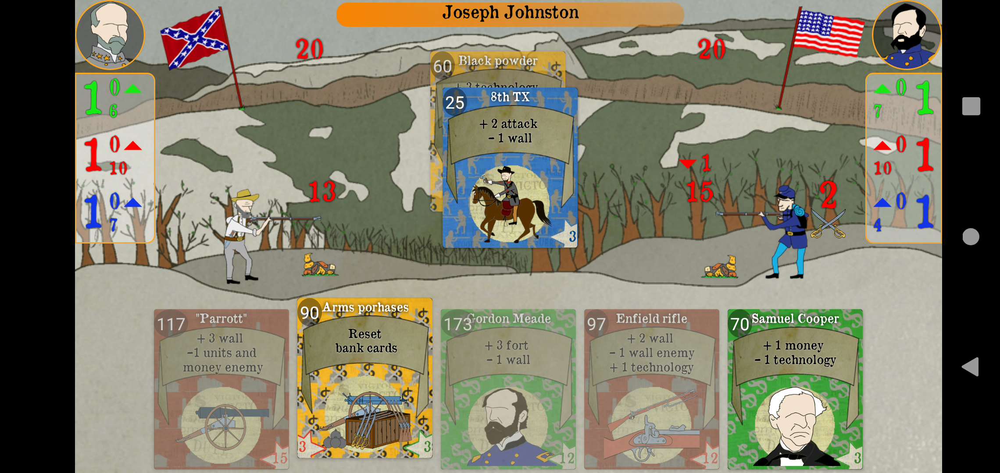
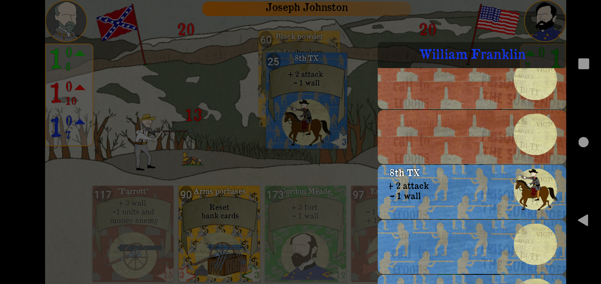
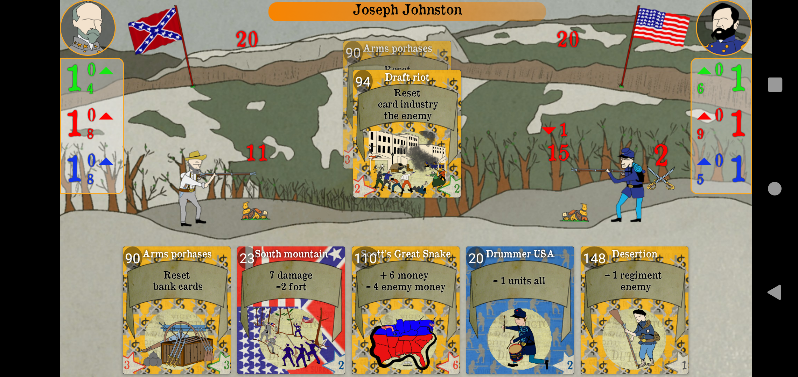

На экране представлено игровое поле. Левая часть и нижняя это области взаимодействия пользователем. Правая часть это область противника.


Показывает сколько будет добавляться каждого из ресурсов за один ход вам или сопернику.
Показыввает сколько всего у вас или соперника имеется из ресурсов на данных ход.
Показывает сколько дополнительно ресурсов любой из групп будет вам или сопернику добавляться за ход.

Внизу расположен блок карт игрока. Внизу карты слева и справа в углу указана стоимость карты в ресурсах, цвет обозначает какой именно ресурс требуется Карты группы 1 затемнены и ими ходить нельзя так как не хватает на них ресурсов их можно только потянуть вниз и сбросить. Карты группы 2 яркие и ими моно ходить потянув вверх.
Походим картой желтого цвета номер 60, она добавляет + 3 технологии всем(Красно-коричневая группа) итого после хода этой карты у пользователя и у соперника добавятся данные ресурсы в область на скриноште ниже
Делаем ход, а соперник в тоже время делает ход картой синей группы номер 25
В итоге у игрока и у соперника стало +3 технологии +1 за ход итого стало по 10.

В тоже время соперник потратил 3 ресурса синей группы и теперь имеет только 4. В тоже время карта уменьшила значение прироста вала каждый ход, сейчас стрелка указывает вниз и имеет занчение 1, значит вал не ростет каждый ход и остается не изменным. Так же карта увеличила значение атаки на вал и форт противника, отображается сзади форта соперника и равно 2. Означает что каждый ход соперник будет отнимать по 2 от вала поользователя, обратите внимание что вал пользователя стал равен 13. А когда вал станет 0 то будет уменьшать уже форт пользователя.
Так же карта добавилась в меню
Собираемся походить картой номер 90 желтой группы, оно должна сбросить все карты зеленой группы у игрока.
Как видим все карты зеленой группы были удалены у игрока. Соперник в тоже время использовал карту сбросить все карты коричневой группы у соперника(то есть у игрока) и дополнительно скинулись карты корчиневой группы. В итоге у игрока почт ипольностью обновилась колода.

Игрок собирается походить картой красно-коричнеовй группы номер 33. Она добавляет +1 вал игроку, +1 технологию за ход и -1 юнит.

Карта 33 была добавлена в меню игрока

В итоге игрок походил картой 33 а соперник картой атаки 128. У игрока в области вала стрдка стала указывать вверх и появилась 1, что занчит увеличенеи вала каждый ход на 1. В области синих ресурсов стрелка указывает вниз и отображается 1, что значит что юниты (ресурсы синей группы) не добавляются каждый ход.
Соперник нанес уров в 6 единиц валу пользователя, + 2 урона он и так наносит за ход итого у пользователя вал стал равне -1 но прирос на +1 за ход и стал равен 0. Себе же он увеличил вал на +1.